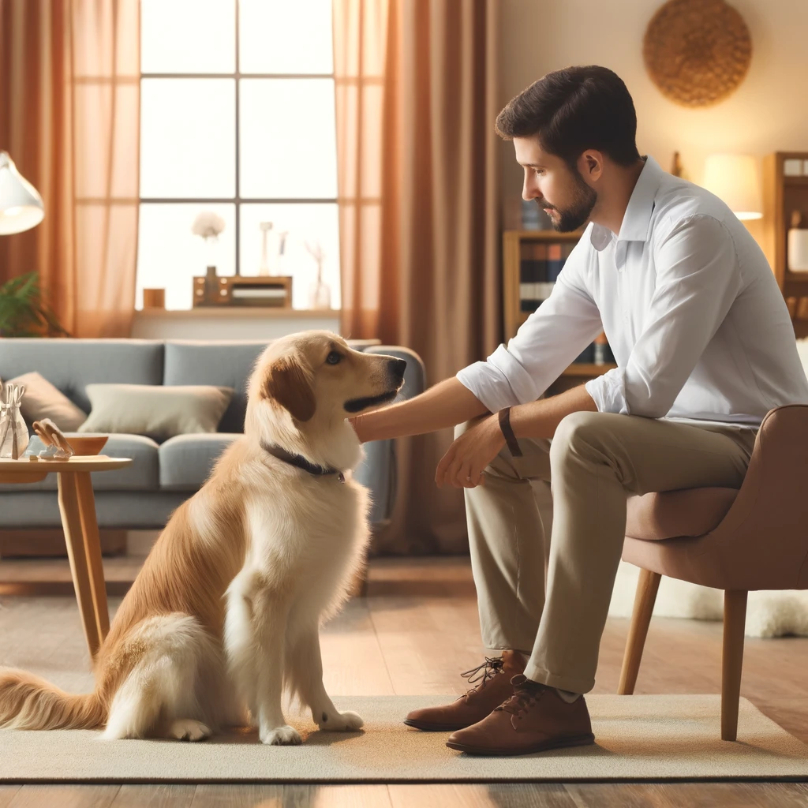

דרך הכלב 🐕
ברוכים הבאים ל"דרך הכלב" - חלל המציע גישה חדשנית ומגוונת לכלבנות טיפולית ולימודית.

שירותינו 🌟
ב"דרך הכלב", אנו מאמינים בכוח של החיבור בין אדם לכלב ובפוטנציאל שלו לשינוי ולטיפול. אנו מציעים מגוון שירותים ומוצרים:
- כלבנות טיפולית: הפעלת כלבים מאומנים במטרה לסייע לאנשים מכל הגילאים ורקעים.
- קלפי משחק חינוכיים וטיפוליים: ערכות קלפים מיוחדות המשלבות תרגול כישורים חברתיים, רגשיים וקוגניטיביים דרך משחק.
- שירותי ייעוץ ותמיכה: מתן ייעוץ מקצועי למשפחות וארגונים המעוניינים להשתמש בכלבים לצורכי טיפול ותמיכה.
- תכניות מותאמות אישית: פיתוח תוכניות טיפוליות מותאמות לצרכים ספציפיים של קבוצות או פרטים.
לחצו כאן לצפייה ורכישה 💼